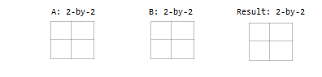
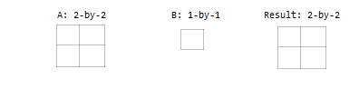
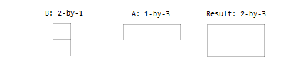
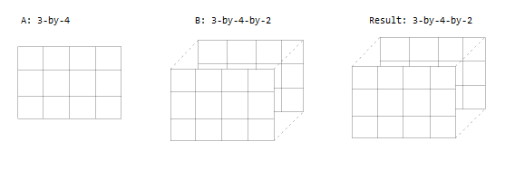
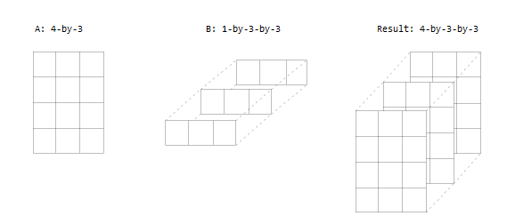

Compatible Array Sizes for Basic Operations
Most binary (two-input) operators and functions in MATLAB® support numeric arrays that have compatible sizes. Two inputs have compatible sizes if, for every dimension, the dimension sizes of the inputs are either the same or one of them is 1. In the simplest cases, two array sizes are compatible if they are exactly the same or if one is a scalar. MATLAB implicitly expands arrays with compatible sizes to be the same size during the execution of the element-wise operation or function.
Inputs with Compatible Sizes
2-D Inputs
These are some combinations of scalars, vectors, and matrices that have compatible sizes:
Two inputs which are exactly the same size.

One input is a scalar.

One input is a matrix, and the other is a column vector with the same number of rows.

One input is a column vector, and the other is a row vector.

Multidimensional Arrays
Every array in MATLAB has trailing dimensions of size 1. For multidimensional arrays, this means that a 3-by-4 matrix is the same as a matrix of size 3-by-4-by-1-by-1-by-1. Examples of multidimensional arrays with compatible sizes are:
One input is a matrix, and the other is a 3-D array with the same number of rows and columns.

One input is a matrix, and the other is a 3-D array. The dimensions are all either the same or one of them is 1.

Empty Arrays
The rules are the same for empty arrays or arrays that have a dimension size of zero. The size of the dimension that is not equal to 1 determines the size of the output. This means that dimensions with a size of zero must be paired with a dimension of size 1 or 0 in the other array, and that the output has a dimension size of 0.
A: 1-by-0
B: 3-by-1
Result: 3-by-0Inputs with Incompatible Sizes
Incompatible inputs have sizes that cannot be implicitly expanded to be the same size. For example:
One of the dimension sizes are not equal, and neither is 1.
A: 3-by-2 B: 4-by-2
Two nonscalar row vectors with lengths that are not the same.
A: 1-by-3 B: 1-by-4
Examples
Subtract Vector from Matrix
To simplify vector-matrix operations, use implicit expansion with dimensional
functions such as sum, mean,
min, and others.
For example, calculate the mean value of each column in a matrix, then subtract the mean value from each element.
A = magic(3)
A =
8 1 6
3 5 7
4 9 2C = mean(A)
C =
5 5 5A - C
ans =
3 -4 1
-2 0 2
-1 4 -3Add Row and Column Vector
Row and column vectors have compatible sizes, and when you perform an operation on them the result is a matrix.
For example, add a row and column vector. The result is the same as
bsxfun(@plus,a,b).
a = [1 2 3 4]
ans =
1 2 3 4b = [5; 6; 7]
ans =
5
6
7a + b
ans =
6 7 8 9
7 8 9 10
8 9 10 11